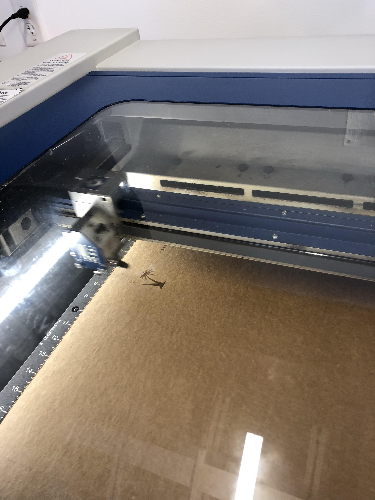
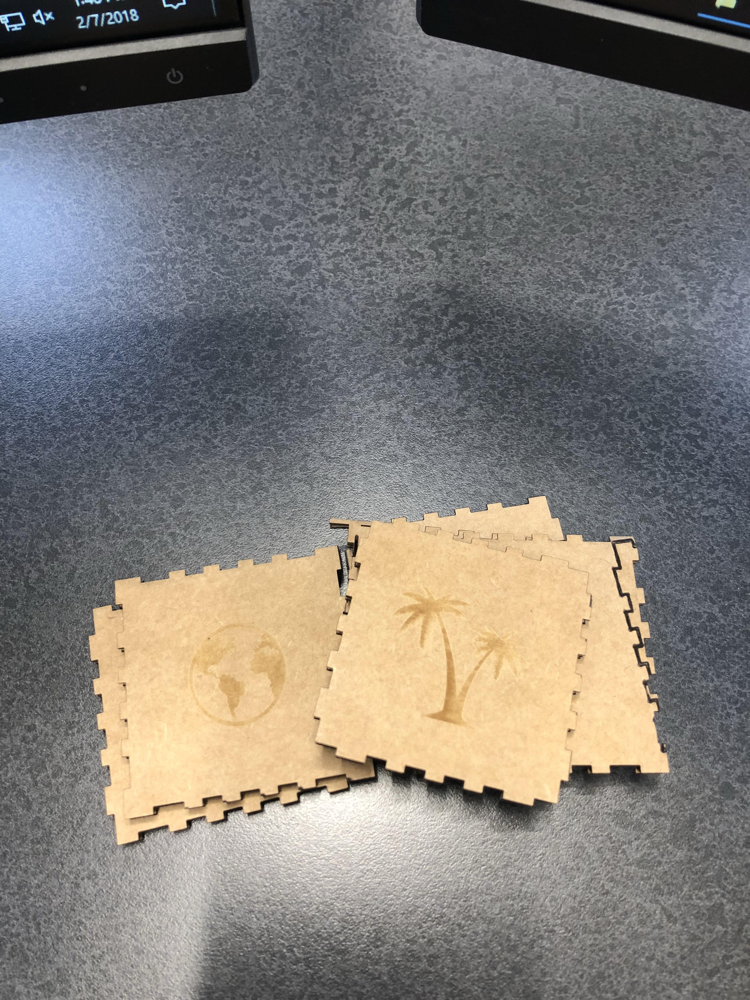

Rotation 4: Laser Cutting and Engraving and Vinyl Cutting
Project Description:
For the first project, I designed a cardboard box using both raster and vector using the MakerCase software. I choose the globe, pineapple, slice of pizza, my name in a very cool font, a camel, and a palm tree to put on the card board pieces. I used CorelDraw software for this project. The laser printed the designs lightly, but I ended up liking how it turned out.


Project Description:
For the second project, I made three different shapes using CorelDraw to make a press fit.